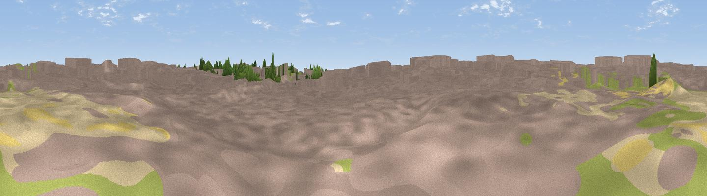

Aussichtspunkt H&MV Office
#46095 in England · top 87% of its area beats it · near Willesden · access?Where it is
The exact computed spot (TQ 21088 82474). Click the marker for map links.
Public access: no public right of way or access land is recorded at this exact spot — it may be on private land. Computed from Natural England's CRoW access layer and OpenStreetMap rights of way — not the legal definitive map. Always verify locally.
The view, rendered

A 360° render of this exact spot computed from the terrain model, tree cover and land cover — summer colours, afternoon light, calibrated against photographs of famous viewpoints. Real trees, hedges and buildings will differ in detail.
The panorama
Grey silhouette: terrain skyline in each direction (720 bearings, Earth curvature and refraction included). Dashed green: skyline with trees (+15 m) and buildings (+8 m) as obstacles. Blue strip: how far the ground is visible on each bearing.
Where the view opens
Wedge length = distance to the farthest visible ground on that bearing (vegetation-aware). Rings at 10, 25 and 50 km.
What fills the view
79% built-up · 13% woodland · 6% grassland · 2% cropland
Angular shares of the visible panorama (visual magnitude), not map area. Landscape diversity 0.30 (0–1 Shannon).
Key numbers
More beautiful places nearby
The staircase of upgrades: each row has a higher view potential than everything closer. Driving times are estimates from straight-line distance, calibrated against real road routing — check an actual route before setting out.
| Place | Direction | Drive | Score |
|---|---|---|---|
| Park Hill | NNE · 2 km | ~5 min | 15.1 |
| Hanger Hill | W · 2 km | ~6 min | 20.3 |
| Viewpoint near Willesden | NNE · 4 km | ~9 min | 26.3 |
| Horsenden Hill | WNW · 5 km | ~11 min | 29.3 |
| Parliament Hill | ENE · 8 km | ~15 min | 33.3 |
| Harrow on the Hill | NW · 8 km | ~16 min | 42.3 |
| Viewpoint near Buckland | S · 30 km | ~47 min | 52.7 |
| Viewpoint near Lower Kingswood | S · 30 km | ~48 min | 67.7 |
51.52820, -0.25584 · source: osm viewpoint · position refined by local search. Computed location — check access rights before visiting.